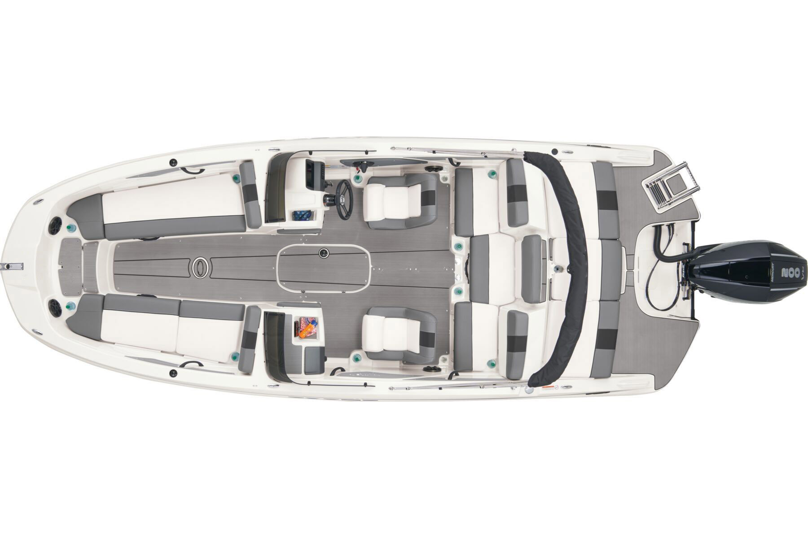

Kattintson a képen látható termékkategóriák valamelyikére a találatok megjelenítéséhez!
Amennyiben nem találta meg, amit keresett, illetve kíváncsi a többi termékünkre is, keressen az összes kategória között
>>>
